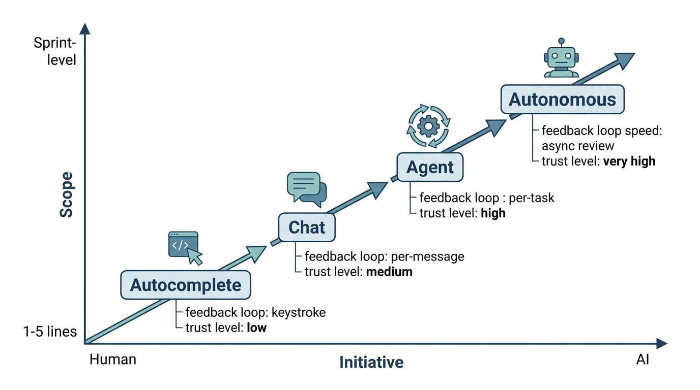

Prerequisites
Section 8.1 covered how code models learn, and Section 8.2 introduced the graph structures that let them reason about repositories. Now we turn to the human side: how developers actually work with these tools. This section assumes you have used at least one AI coding tool (even a simple autocomplete). Familiarity with the tool-use concepts from Chapter 4 will help with the agent-mode discussion.
AI coding tools exist on a spectrum from passive to active. At one end, autocomplete waits for the developer to type and then suggests the next few tokens. At the other end, an autonomous agent reads a specification, writes code, runs tests, debugs failures, and commits the result. Between these poles lie chat-based assistants and tool-augmented agents. Each mode trades off developer control against AI autonomy, with implications for productivity, code quality, learning, and trust. Understanding these patterns is essential for choosing the right mode for each task and for designing the collaboration workflows that structure the rest of Part II.
1. The Collaboration Spectrum
Choosing the wrong collaboration mode does not just slow a team down; it changes what the team builds. Early analyses of large-scale Copilot deployments suggest that developers who default to a single mode tend to produce more rework, miss design alternatives, and accumulate blind spots in the code they nominally "wrote." The patterns below make that cost visible and the remedy concrete.
The same developer who accepts an autocomplete suggestion every six seconds will spend twenty minutes negotiating a database schema with a chat assistant. Both interactions qualify as "AI-assisted coding." Two axes organize this range: the initiative axis (who decides what to do next) and the scope axis (how much code the AI produces per interaction). These axes define four canonical modes, shown in Figure 8.5. Figure 8.3.1 illustrates Collaboration Spectrum.

Mode 1: Autocomplete. The developer writes code; the AI suggests completions inline. Initiative stays with the developer. Scope is small: a single line or a short block. The developer accepts, rejects, or modifies each suggestion with a keystroke. This is the mode of GitHub Copilot's inline suggestions and Cursor's tab completion. Autocomplete excels at reducing keystrokes for boilerplate, Application Programming Interface (API) calls with predictable argument patterns, and repetitive code that follows a local pattern. It struggles with novel logic, cross-file reasoning, and anything requiring understanding of the broader system design.
Autocomplete runs continuously in the background of your editor as a token-level prediction system. It feeds the code surrounding your cursor (typically a few hundred lines of local context plus open-tab contents) into a language model that returns the most probable next tokens. It matters because it targets the highest-frequency, lowest-risk class of edits: boilerplate glue code, argument lists, and idiomatic patterns that consume a surprising share of typing time but carry little design ambiguity. On each keystroke (or brief pause), the editor sends the current prefix to a fast, small model optimized for latency under 200 ms. The model returns one or more candidate continuations ranked by likelihood. Use autocomplete when the code you need follows a well-established local pattern or API convention; switch to chat or agent mode whenever the next lines require reasoning about distant code, architectural decisions, or domain-specific logic the model has not seen in its immediate context.
Mode 2: Chat. The developer describes a task in natural language; the AI produces a response containing code, explanations, or both. Initiative is shared: the developer frames the problem, the AI proposes a solution, the developer evaluates and iterates. Scope varies from a single function to a multi-file design. Chat mode is the interface of Claude, ChatGPT, and Cursor's chat panel. It excels at explaining unfamiliar code, exploring design alternatives, and generating initial implementations that the developer then refines.
Mode 3: Agent. The developer provides a high-level goal (an issue, a feature specification, a failing test); the AI autonomously plans a sequence of actions, reads files, writes code, runs tests, and iterates. Initiative belongs to the AI during execution, but the developer retains approval authority over the final result. Scope can span an entire feature or bug fix. This is the mode of Claude Code, Codex CLI, and Cursor's agent mode. Agents excel at well-specified tasks with clear acceptance criteria (passing tests, matching a specification) and struggle with ambiguous requirements or tasks requiring subjective design judgment. In short: the right collaboration mode is not the most powerful one; it is the one whose scope matches the clarity of your specification.
Common Misconception
Misconception: "Agent mode is strictly superior to chat or autocomplete because it can do more." This is incorrect. Agent mode introduces higher latency, consumes significantly more tokens, and locks the developer into the agent's interpretation of an ambiguous requirement. For exploratory tasks, quick edits, or situations where the developer needs to maintain a mental model of every change, chat or autocomplete often produces better outcomes faster. The right mode depends on task structure and specification clarity, not on maximum capability.
Mode 4: Autonomous. The AI operates without real-time human supervision, picking up tasks from a queue (issue tracker, CI pipeline), executing them, and submitting results for asynchronous review. Initiative belongs entirely to the AI. Scope can span multiple issues or an entire sprint's worth of work. This mode is emerging in systems like Codex's autonomous agents and in the multi-agent software teams we explore in Chapter 17. The autonomous mode is the frontier; it demands high reliability, comprehensive test coverage, and robust guardrails. Continuous Integration (CI) pipelines serve as the primary guardrail in this mode.
from dataclasses import dataclass
from enum import Enum
class CollaborationMode(Enum):
AUTOCOMPLETE = "autocomplete"
CHAT = "chat"
AGENT = "agent"
AUTONOMOUS = "autonomous"
@dataclass
class ModeCharacteristics:
"""Characteristics of each human-AI collaboration mode."""
mode: CollaborationMode
initiative: str # "human", "shared", "ai", "ai-full"
typical_scope: str # scope of each AI action
feedback_loop: str # how quickly human reviews AI output
trust_required: str # level of trust needed in AI output
best_for: list[str] # task types where this mode excels
COLLABORATION_MODES = [
ModeCharacteristics(
mode=CollaborationMode.AUTOCOMPLETE,
initiative="human",
typical_scope="1-5 lines",
feedback_loop="immediate (keystroke)",
trust_required="low",
best_for=["boilerplate", "API calls", "repetitive patterns"],
),
ModeCharacteristics(
mode=CollaborationMode.CHAT,
initiative="shared",
typical_scope="1 function to 1 file",
feedback_loop="per-message (seconds to minutes)",
trust_required="medium",
best_for=["exploration", "explanation", "prototyping",
"design discussion"],
),
ModeCharacteristics(
mode=CollaborationMode.AGENT,
initiative="ai (with human approval)",
typical_scope="1 feature or bug fix (multi-file)",
feedback_loop="per-task (minutes to hours)",
trust_required="high",
best_for=["well-specified features", "bug fixes with tests",
"refactoring", "migration"],
),
ModeCharacteristics(
mode=CollaborationMode.AUTONOMOUS,
initiative="ai (fully autonomous)",
typical_scope="multiple tasks (sprint-level)",
feedback_loop="asynchronous review (hours to days)",
trust_required="very high",
best_for=["CI-gated changes", "dependency updates",
"routine maintenance"],
),
]
def recommend_mode(task_description: str,
has_tests: bool,
is_well_specified: bool) -> CollaborationMode:
"""Recommend a collaboration mode based on task characteristics.
This simple heuristic illustrates the decision factors;
real systems would use richer signals.
"""
if not is_well_specified:
return CollaborationMode.CHAT # need exploration first
if has_tests and is_well_specified:
return CollaborationMode.AGENT # clear criteria, verifiable
if is_well_specified:
return CollaborationMode.CHAT # specified but unverifiable
return CollaborationMode.AUTOCOMPLETE # fallback to inline help
Choosing the right collaboration mode is itself a decision that affects productivity more than the quality of any individual AI suggestion. Using autocomplete for a task that requires multi-file reasoning wastes time on piecemeal edits. Using an agent for a task that requires creative exploration locks you into the agent's first interpretation. The most effective developers switch modes fluidly: chat to explore the design space, then agent to implement the chosen design, then autocomplete to polish the details. This mode-switching skill is what we formalize as "vibe coding" in Chapter 9.
This mode-switching ability gives rise to a recurring collaboration pattern we call explore-implement-polish: begin in chat mode to understand the problem and evaluate design alternatives, shift to agent mode to implement the chosen design against concrete acceptance criteria, then drop to autocomplete for final cleanup and stylistic consistency. Each phase uses the mode whose initiative and scope best match the task's current level of ambiguity. Recognizing this three-phase rhythm (and the variants that emerge in practice) is the core skill this section aims to build.
Fluid mode switching, however, depends on something that distinguishes the more autonomous modes from simple autocomplete: the ability of an AI to use tools that read, write, and execute code inside a real repository.
2. Tool-Augmented Code Generation
Agent-mode coding tools are distinguished from chat tools by their ability to use tools: read files, write files, execute shell commands, run tests, search codebases, and interact with version control. Tool use transforms the code model from a text generator into an actor that can observe the state of a repository, take actions, and observe the results.
The tool-use loop follows a pattern that will be familiar from Chapter 4's treatment of reasoning with actions:
- Observe: The agent reads relevant files, inspects the directory structure, or examines test output.
- Think: The model reasons about what it has observed and plans the next action.
- Act: The agent executes a tool call: editing a file, running a command, or searching for a symbol.
- Evaluate: The agent observes the result of its action and decides whether to continue, retry, or report completion.
Each cycle through this loop consumes tokens (for observation and reasoning) and latency (for tool execution). Efficient agents minimize the number of cycles by gathering information strategically and making larger, more confident edits. The repository graph structures from Section 8.2 directly serve this efficiency: a good repository map lets the agent skip the "explore randomly" phase and jump directly to relevant files.
Step-Through: The Observe-Think-Act-Evaluate Loop
Trace through one complete agent cycle for the task "fix the off-by-one bug in
paginate()" with concrete values at each step:
Cycle 1, Observe: Agent calls read_file("pagination.py").
Sees return items[offset:offset+limit] on line 42, with
offset = (page - 1) * limit on line 40. Token cost: 1,200 tokens.
Latency: 80 ms (file read).
Cycle 1, Think: Agent reasons: "For page=1, limit=10, offset=0, slice is items[0:10], which is correct. For page=2, offset=10, slice is items[10:20], also correct. The bug report says the last page returns one extra item. Check how total count is computed." Token cost: 350 tokens.
Cycle 1, Act: Agent calls grep("total_pages", "pagination.py").
Finds line 38: total_pages = len(items) // limit + 1. Token cost:
200 tokens. Latency: 40 ms.
Cycle 1, Evaluate: Agent identifies the bug: integer division
// plus 1 overcounts when len(items) is exactly divisible
by limit. For 30 items with limit=10, this gives 4 pages instead of 3,
and page 4 returns an empty list (not an extra item). Agent decides it needs to
read the test file to understand the reported symptom before fixing. One more
cycle needed. Running total: 1,770 tokens, 2 tool calls.
from dataclasses import dataclass, field
from typing import Any
@dataclass
class ToolCall:
"""A single tool invocation by a coding agent."""
tool_name: str # "read_file", "write_file", "run_command", etc.
arguments: dict # tool-specific parameters
result: str = "" # populated after execution
duration_ms: int = 0 # wall-clock time for execution
@dataclass
class AgentStep:
"""One step in the agent's observe-think-act-evaluate loop."""
observation: str # what the agent saw
reasoning: str # the agent's chain of thought
tool_calls: list[ToolCall] = field(default_factory=list)
evaluation: str = "" # agent's assessment of the result
@dataclass
class AgentTrace:
"""Complete trace of an agent's work on a task."""
task: str
steps: list[AgentStep] = field(default_factory=list)
outcome: str = "" # "success", "failure", "partial"
total_tokens: int = 0
total_tool_calls: int = 0
def add_step(self, step: AgentStep) -> None:
self.steps.append(step)
self.total_tool_calls += len(step.tool_calls)
def summary(self) -> str:
"""Generate a human-readable summary of the agent's work."""
lines = [f"Task: {self.task}",
f"Steps: {len(self.steps)}",
f"Tool calls: {self.total_tool_calls}",
f"Outcome: {self.outcome}", ""]
for i, step in enumerate(self.steps, 1):
lines.append(f"Step {i}:")
lines.append(f" Reasoning: {step.reasoning[:100]}...")
for tc in step.tool_calls:
lines.append(f" Tool: {tc.tool_name}"
f"({tc.duration_ms}ms)")
if step.evaluation:
lines.append(f" Evaluation: {step.evaluation[:80]}...")
return "\n".join(lines)
3. Three Tools in Practice
The coding agent landscape in 2026 includes dozens of tools, but three represent the main architectural patterns: Claude Code (terminal-native agent), Codex CLI (sandboxed autonomous agent), and Cursor (IDE-integrated agent). Understanding their designs illuminates the trade-offs in building coding AI.
Claude Code operates in the developer's terminal with full access to the file system, shell, and git. It reads, writes, runs commands, and manages branches in the actual working environment. This maximizes capability but demands trust: the agent modifies real files. A permission system mitigates the risk; developers approve action categories and can review each operation before execution. The key architectural choice, no sandbox, means changes are immediately testable and observations always current.
Codex CLI (as of 2025, OpenAI also offers a cloud-hosted Codex agent integrated into ChatGPT, which extends this sandboxed model with asynchronous task queues and GitHub integration) takes the opposite approach: each task runs in a sandboxed environment (an isolated container or temporary directory that prevents the agent from modifying the developer's real files) where the agent can read, write, and execute freely without risk to the developer's working state. The sandbox is initialized from the repository state, and the agent's changes are presented as a diff for review. This design enables autonomous operation: the developer can assign multiple tasks and review results asynchronously, because sandbox isolation guarantees that one task cannot corrupt another. The trade-off is that the agent cannot observe real-time changes or interact with services (databases, APIs) that live outside the sandbox.
Cursor integrates AI into the Integrated Development Environment (IDE) itself, offering all four collaboration modes in a single interface: autocomplete (tab completion), chat (side panel), agent (Composer, renamed to "Agent" in early 2025), and inline editing (Cmd+K). Its key architectural choice is multi-model routing, where different models handle different tasks. Fast, small models handle autocomplete (where latency matters most); large, capable models handle agent-mode tasks (where accuracy matters most). Cursor also maintains a persistent index of the codebase, enabling instant symbol lookup and semantic search without re-parsing on each query.
Consider the task: "Add input validation to the create_user endpoint
and write tests for invalid inputs." Here is how each tool approaches it:
Claude Code: The developer types the task description in the terminal.
Claude Code reads the existing endpoint file, identifies the create_user
function, examines the data model and existing tests, then writes the validation
logic directly into the file and adds test cases to the test file. The developer
sees each file edit in real time and can interrupt or redirect at any point.
Codex CLI: The developer submits the task. Codex spins up a sandbox, clones the repo state, reads the relevant files, writes the validation and tests, runs the test suite inside the sandbox to verify, and presents the complete diff. The developer reviews the diff asynchronously and applies it with one command.
Cursor: The developer selects the create_user function,
opens Composer, and types the request. Cursor's agent reads the surrounding code,
generates the validation logic as an inline diff, and proposes test additions in
the test file. The developer reviews the changes file-by-file within the IDE,
accepting or modifying each edit.
All three produce similar code. The differences are in workflow integration, feedback speed, and how much context the developer maintains during the process.
Real-World Application: GitHub Copilot at Accenture
Accenture deployed GitHub Copilot to over 50,000 developers in 2024 and reportedly observed that developers using the autocomplete and chat modes together completed tasks roughly 35% faster than those using either mode alone (exact figures varied by team and project type). The key finding was that mode switching appeared to matter more than any single mode's quality: developers who used chat to understand unfamiliar codebases and then switched to autocomplete for implementation had the lowest rework rates, while those who jumped directly to agent mode on unfamiliar code had the highest.
4. Measuring Collaboration Effectiveness
How do we know if human-AI collaboration is working? Raw metrics like "lines of code generated" or "suggestions accepted" are misleading. A developer who accepts 80% of autocomplete suggestions might be writing trivial code, while one who accepts 15% might be using the suggestions as a starting point for complex implementations.
More meaningful metrics operate at the task level:
Core Effectiveness Metrics
Task completion time measures how long it takes to go from a specification to a working, tested implementation. This is the most directly relevant metric for productivity, but it requires careful baselines: the comparison should be against the same developer doing the same type of task without AI assistance.
Iteration count measures how many cycles of the generate-test-refine loop are needed. Fewer iterations suggest better first-attempt quality, which reduces both time and cognitive load.
Code quality metrics (test coverage, cyclomatic complexity, where cyclomatic complexity counts the number of independent execution paths through a function, lint violations, type-checking errors) measure whether the AI-generated code meets the project's standards. These are automatable and objective, making them suitable for continuous monitoring.
Checkpoint
So far: collaboration effectiveness can be measured through task completion time (wall-clock productivity), iteration count (first-attempt quality), and code quality metrics (automated standards compliance); the next metric, rework rate, captures whether those gains persist beyond the initial commit.
Rework rate measures how often AI-generated code is subsequently modified in the next commit or within a short time window. High rework rates suggest the AI output requires substantial human correction, reducing the net productivity gain.
@dataclass
class CollaborationMetrics:
"""Metrics for evaluating human-AI coding collaboration."""
task_id: str
mode: CollaborationMode
completion_time_minutes: float
iteration_count: int
lines_generated: int
lines_accepted: int # after human review
lines_modified: int # human edits to AI output
test_coverage_delta: float # change in test coverage
lint_violations: int
rework_within_24h: int # lines changed in next day
@property
def acceptance_rate(self) -> float:
"""Fraction of generated code accepted without modification."""
if self.lines_generated == 0:
return 0.0
return self.lines_accepted / self.lines_generated
@property
def net_productivity(self) -> float:
"""Lines of accepted code per minute of developer time.
Accounts for time spent reviewing and modifying AI output.
"""
net_lines = self.lines_accepted - self.lines_modified
if self.completion_time_minutes == 0:
return 0.0
return max(0, net_lines) / self.completion_time_minutes
@property
def quality_score(self) -> float:
"""Composite quality score (0 to 1).
Combines test coverage improvement, lint cleanliness,
and low rework rate.
"""
coverage_score = min(1.0, max(0, self.test_coverage_delta) / 0.1)
lint_score = 1.0 / (1.0 + self.lint_violations)
rework_score = 1.0 / (1.0 + self.rework_within_24h / 10)
return (coverage_score + lint_score + rework_score) / 3
def compare_modes(metrics: list[CollaborationMetrics]) -> str:
"""Compare collaboration modes across a set of completed tasks."""
by_mode: dict[str, list[CollaborationMetrics]] = {}
for m in metrics:
by_mode.setdefault(m.mode.value, []).append(m)
lines = ["Mode Comparison:"]
for mode, tasks in sorted(by_mode.items()):
avg_time = sum(t.completion_time_minutes for t in tasks) / len(tasks)
avg_accept = sum(t.acceptance_rate for t in tasks) / len(tasks)
avg_quality = sum(t.quality_score for t in tasks) / len(tasks)
lines.append(
f" {mode:14s}: {len(tasks):3d} tasks, "
f"avg {avg_time:.1f}min, "
f"accept {avg_accept:.0%}, "
f"quality {avg_quality:.2f}"
)
return "\n".join(lines)
The recommend_mode heuristic above is a simplification. In practice,
agent-mode tools route different sub-tasks to different models. The
litellm library provides a unified interface for calling any Large Language Model (LLM)
provider with automatic fallback and load balancing:
import litellm
# Same interface, different models for different tasks
# Fast model for autocomplete-style completions
quick = litellm.completion(
model="claude-haiku-4-5-20250620",
messages=[{"role": "user", "content": "Complete: def sort("}],
max_tokens=50,
)
# Powerful model for agent-style reasoning
deep = litellm.completion(
model="claude-sonnet-4-20250514",
messages=[{"role": "user", "content": spec_prompt}],
max_tokens=4000,
)
This replaces roughly 80 lines of provider-specific API wrappers, retry logic, and response normalization with a 2-line call per model, while enabling the multi-model routing pattern that tools like Cursor use internally.
Metrics can tell us whether collaboration is productive in aggregate, but they leave open a harder, more immediate question: how does a developer decide, in the moment, whether to trust a particular piece of AI-generated code?
5. The Trust Calibration Problem
Unlike a library or framework whose behavior can be inspected through source code, an AI model's reasoning is opaque, so the developer cannot simply read the implementation to decide whether to trust a suggestion. The deepest challenge in human-AI coding collaboration is therefore trust calibration: the developer must learn when to trust the AI's output and when to verify carefully. Under-trust wastes the AI's capability (the developer manually rewrites correct code). Over-trust introduces bugs (the developer accepts incorrect code without review).
Mental Model
Think of trust calibration like a new cook learning which dishes to follow a recipe exactly and which to improvise. A beginning cook should follow the recipe precisely for a souffle (complex, failure-prone, hard to diagnose mid-process) but can freely improvise a stir-fry (fast feedback, easy to taste and adjust, low cost of failure). Over time, the cook builds a mental map of which recipes are reliable and which need personal judgment. Similarly, a developer builds a calibration map: for well-trodden patterns (the stir-fry), accept AI output with light review; for security logic or novel algorithms (the souffle), verify every line regardless of how confident the suggestion appears.
Trust calibration is task-dependent. For well-understood patterns (Create, Read, Update, Delete (CRUD) endpoints, serialization logic, test boilerplate), AI output is highly reliable and can be trusted with minimal review. For novel algorithms, security-sensitive code, or complex state management, AI output requires careful verification regardless of how confident the model appears. The model's expressed confidence does not reliably predict correctness in practice; it reflects token-level likelihood, which correlates with but does not equal semantic correctness.
Effective trust calibration follows three principles:
- Verify through tests, not through reading. Running the code is more reliable than reading the code. A comprehensive test suite is the most effective trust mechanism.
- Calibrate on experience. Track the AI's error rate on different task types in your specific codebase. Trust is earned, not assumed.
- Increase autonomy gradually. Start with autocomplete, move to chat, then to agent mode as you build confidence in the tool's behavior on your codebase.
A growing body of research studies how AI coding tools reshape software engineering practices. The SWE-bench benchmark, a standardized evaluation suite that tests whether AI agents can resolve real GitHub issues end to end, (Jimenez et al., 2024) established the first rigorous evaluation framework for autonomous coding agents by drawing on 2,294 real GitHub issues from 12 popular Python repositories; on the 500-instance SWE-bench Verified subset (circa 2025), top agent systems resolve over 50% of tasks, up from under 5% when the benchmark launched in 2023. (A tenfold leap in two years, driven not by bigger models but by better agent-computer interfaces.) Building on this, the SWE-agent system (Yang et al., 2024) demonstrated that a purpose-built agent-computer interface (ACI), the set of commands and feedback mechanisms through which an agent interacts with its computing environment, with a linting-gated (rejecting edits that introduce syntax or style errors before they propagate) file editor and a compact search command set, substantially outperforms naive tool-use wrappers by reducing error cascades across the observe-think-act loop. More recently, studies from Microsoft Research and Google (2024, 2025) show that AI-assisted developers write code faster but spend more time on code review, confirming a shift from "writing" to "reviewing" as the primary developer activity. Research on "AI-aware" testing strategies explores how to design test suites that catch the specific error patterns AI tools produce (off-by-one boundary errors, incorrect null handling, subtle logic inversions). These findings inform the testing strategies we develop in Chapter 18.
In chess, "centaur" teams (human + AI) once outperformed both pure humans and pure AI in freestyle tournaments (circa 2005 to 2015), though pure engines have since surpassed centaur play. In programming, the centaur model is the current optimum: the human provides judgment, intent, and architectural vision; the AI provides speed, breadth of knowledge, and tireless execution. Whether this remains the equilibrium as AI capabilities grow is one of the central questions of Chapter 24: Autonomous Software Organizations.
Try It: Build a Personal Collaboration-Mode Tracker
Measure your own collaboration patterns by building a lightweight tracker that logs which mode you use for each coding task and how the result turns out.
Step 1. Create a file called collab_tracker.py. Define a
TaskRecord dataclass with fields: task_description (str),
mode (one of "autocomplete", "chat", "agent"), minutes_spent (float),
lines_changed (int), required_rework (bool), and timestamp (datetime).
Add a function log_task() that appends a JSON-serialized record to a local
file called collab_log.jsonl, where JSONL (JSON Lines) is a format storing one complete JSON object per line for easy append and streaming reads.
Step 2. Add a function summarize_log() that reads the JSONL file,
groups records by mode, and prints the average minutes_spent, average
lines_changed, and rework percentage for each mode.
Step 3. Use the tracker for one full day of coding. After each task (even
small ones), call log_task() with the details. Be consistent: log at least
10 tasks across at least two different modes.
Step 4. At the end of the day, run summarize_log() and examine the
results. Which mode had the lowest rework rate? Which mode had the best ratio of
lines changed to minutes spent? Did any mode surprise you?
Step 5. Add a recommend_mode() function that uses your personal
data: if a mode's rework rate exceeds 40% for a given task length range, the
function should suggest a different mode. Test it against your logged data to see
if its recommendations match your intuition.
Exercise 8.3.1
A junior developer on your team uses agent mode to implement a new Representational State Transfer (REST) endpoint. The agent produces 120 lines of working code, but the developer cannot explain what the middleware chain does or why the input validation uses a particular regex. Using the collaboration spectrum from this section, which mode or combination of modes would you recommend instead, and in what order? Justify your answer in terms of initiative, scope, and trust calibration.
Hint
Consider starting with chat mode to explore the design space and understand the middleware chain before switching to agent mode for implementation. The key principle is that understanding should precede delegation: if the developer cannot explain the code, the trust calibration is miscalibrated regardless of whether the code passes tests.
Exercises
- (Conceptual) A team decides to use agent mode for all coding tasks to maximize productivity. Identify three categories of tasks where this strategy would likely produce worse outcomes than chat mode or manual coding. Explain why for each category.
-
(Coding) Implement a
TrustCalibratorclass that tracks acceptance rate, rework rate, and test-pass rate for AI-generated code across different task categories (e.g., "endpoint", "algorithm", "test", "refactoring"). After 20 tasks, it should recommend whether to increase or decrease autonomy for each category. Write tests for the calibrator. - (Analysis) Read the SWE-bench leaderboard at swebench.com. Compare the top three agent architectures. For each, identify whether they use a sandboxed or unsandboxed approach, how many tool-call rounds they average per issue, and what localization strategy they employ. Summarize the trade-offs.
Lab: Measuring Mode Effectiveness on a Micro-Task Suite
Goal: Empirically compare autocomplete, chat, and agent modes on identical small coding tasks and measure completion time, correctness, and rework.
Tools needed: Python 3.10+, an AI coding tool that supports at least two
modes (e.g., Cursor with tab-completion and Composer, or VS Code with Copilot
inline and Copilot Chat), a stopwatch or time module wrapper, and the
pytest library.
Setup (5 min): Create a directory with five micro-tasks, each defined by a docstring and a test file: (1) parse a CSV line handling quoted commas, (2) implement a simple Least Recently Used (LRU) cache with a dict, (3) write a retry decorator with exponential backoff, (4) convert nested JSON to a flat dictionary with dot-notation keys, (5) validate an email address against a basic regex. Each test file should contain 3 to 5 test cases covering edge cases.
Experiment (15 min): Solve tasks 1 and 2 using only autocomplete (accept or reject suggestions, no chat). Solve tasks 3 and 4 using chat mode (describe what you need, paste the result). Solve task 5 using agent mode (give the agent the docstring and test file, let it work). Time each task from start to all tests passing. Record how many lines you manually edited after the AI's output.
What to vary: Repeat the experiment swapping which tasks get which mode. Try giving the agent mode less context (no test file) and observe how iteration count changes.
What to observe: Compare wall-clock time, lines of manual rework, and number of generate-test-fix cycles across modes. Note whether the "best" mode correlates with task familiarity or task complexity.
What's Next
We have mapped the landscape of human-AI collaboration patterns and the tools that implement them. In Section 8.4: Building with a Coding Agent, we put everything together in a hands-on recipe: using a coding agent to implement a feature from specification to passing tests, with a full reasoning trace that makes the agent's decision process transparent and auditable.